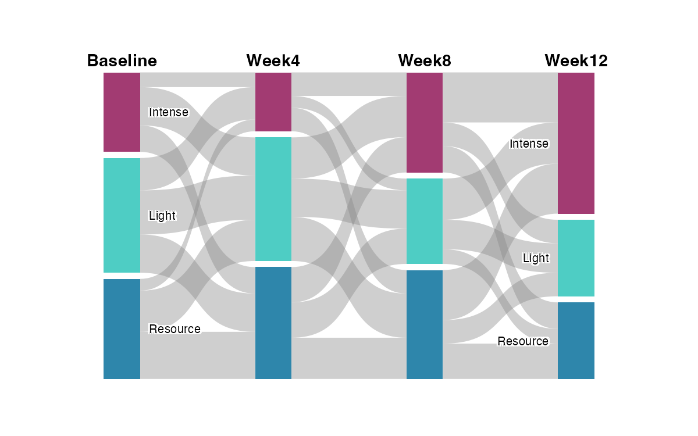
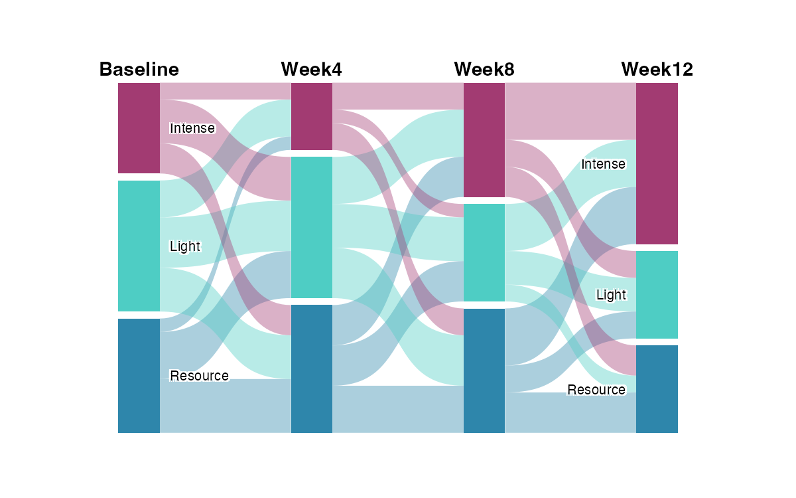
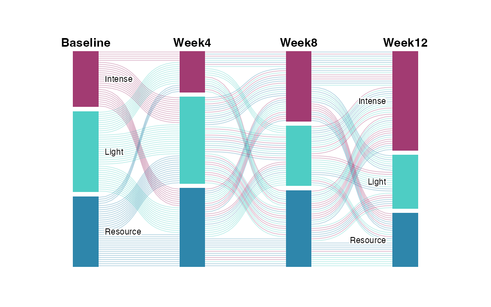
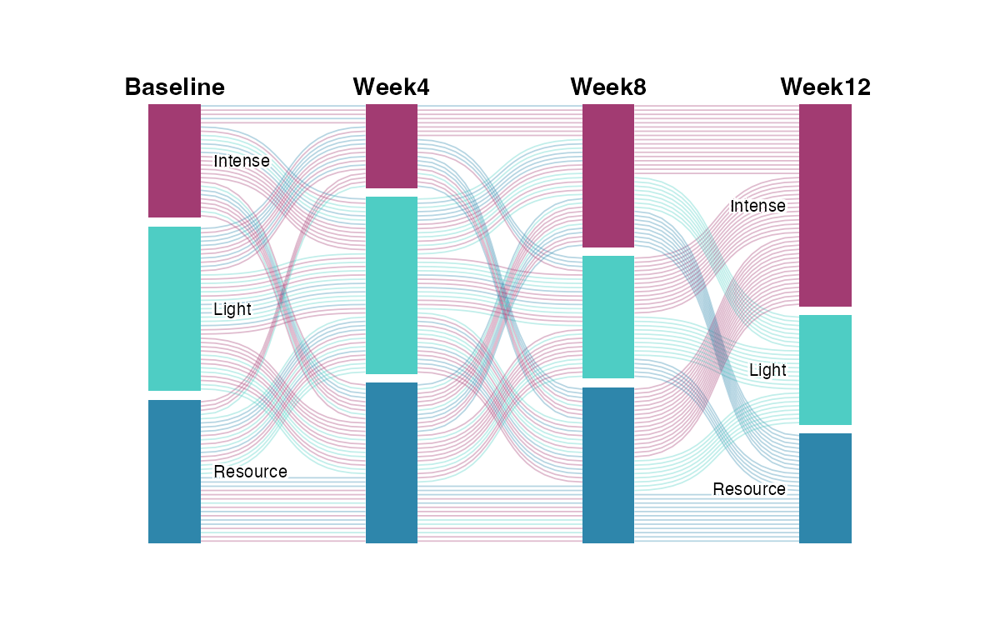
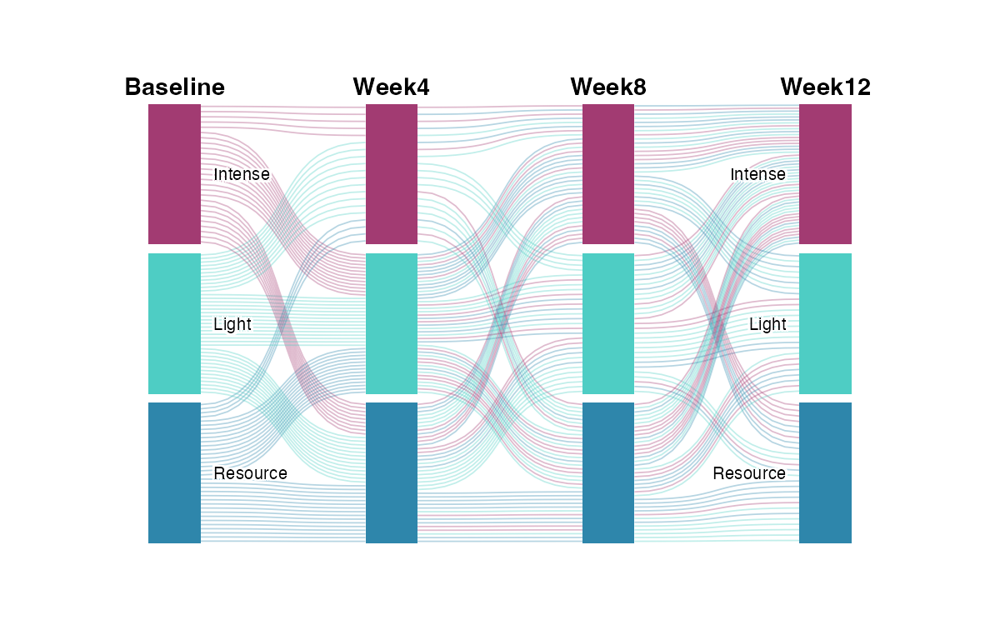

Alluvial & Trajectory Plots
Visualize state transitions and individual paths over time
plot_alluvial()
plot_trajectories()
Input Methods
Multiple ways to provide transition data - choose the most convenient for your use case.
before <- c("A", "A", "B", "B", ...)
after <- c("X", "Y", "X", "Z", ...)
plot_alluvial(before, after)
mat <- matrix(c(50, 20, 10, 30), 2, 2)
rownames(mat) <- c("A", "B"); colnames(mat) <- c("X", "Y")
plot_alluvial(mat)
df <- data.frame(T1 = t1, T2 = t2, T3 = t3, T4 = t4)
plot_alluvial(df)
plot_trajectories(df)
df <- data.frame(from = c("A", "B"), to = c("X", "Y"), count = c(50, 30))
plot_alluvial(df)
plot_alluvial(list(mat1, mat2, mat3), from_title = c("T1", "T2", "T3", "T4"))
plot_alluvial() - Aggregated Flows
Traditional Sankey/alluvial diagram where flows are aggregated by transition counts.

Default
Basic Aggregated
Flow width = transition count. Grey flows.

flow_color_by = "source"
Colored by Source
Flows inherit color from their origin node.

flow_color_by = "destination"
Colored by Destination
Flows inherit color from their target node.
plot_alluvial(df,
flow_color_by = "source",
from_colors = custom_colors,
show_values = TRUE
)
plot_trajectories() - Individual Tracking
Track each person's trajectory with individual lines instead of aggregated flows.

flow_color_by = "first"
Colored by Starting State
Each line = one person. Color shows where they started (Baseline).

flow_color_by = "last"
Colored by Ending State
Each line = one person. Color shows where they ended (Week 12).
plot_trajectories(df,
flow_color_by = "first",
from_colors = custom_colors,
proportional_nodes = TRUE,
line_alpha = 0.35,
line_width = 0.4
)
Proportional vs Equal Nodes
Control whether node sizes reflect counts or are equal.
proportional_nodes = TRUE
Proportional (Default)
Node height reflects the count. Larger groups = taller nodes.

proportional_nodes = FALSE
Equal Size
All nodes same height regardless of count.
Custom Colors
custom_colors <- c(
"Light" = "#4ECDC4",
"Resource" = "#2E86AB",
"Intense" = "#A23B72"
)
plot_alluvial(df, from_colors = custom_colors)
plot_trajectories(df, from_colors = custom_colors)
Parameter Reference
plot_alluvial(
x,
from_title = "From",
to_title = "To",
from_colors = NULL,
flow_fill = "#888888",
flow_alpha = 0.4,
flow_color_by = NULL,
node_width = 0.08,
node_spacing = 0.02,
label_size = 3.5,
label_position = "beside",
label_halo = TRUE,
curve_strength = 0.6,
show_values = FALSE,
show_totals = FALSE,
column_gap = 1
)
plot_trajectories(
x,
from_title = NULL,
from_colors = NULL,
flow_color_by = "first",
line_alpha = 0.3,
line_width = 0.5,
proportional_nodes = TRUE,
node_width = 0.08,
label_size = 3.5,
label_halo = TRUE,
column_gap = 1
)